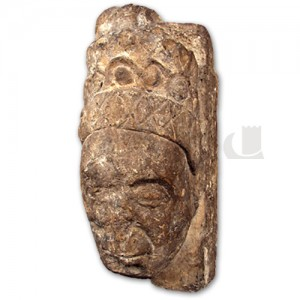

Blog
Alina de Mowbray, Samuel Gamwell and Pierre Claire...

The day after our project meeting in January, Harriett and I headed to Swansea Museum to do some exploratory research. We wanted to see what we could discover surrounding the provenance and collection history of the stone head, supposedly of Alina de Mowbray, in the museum’s collection. Paul, Nicola and colleagues were incredibly helpful, and had already dug out some material to get us started. Harriett and I are thinking about focusing on the stone head in our introduction to the special ‘City Witness’ issue of the Journal of Medieval History which we’re editing. As an artefact, the head offers a way into some of the questions we’ve been exploring more broadly in our research. How do we make sense of a fragment and re-situate it in its original context? How do we interpret and connect different kinds of sources? Do we respond differently to material associated with named, ide.jpgiable, historical individuals? And how to we begin to acknowledge and examine issues of authenticity, desire, hypothesis and conjecture?
Our detective work, hugely supported by the Museum staff, really paid off! There’s a tremendously interesting story behind Alina’s head, which we’re now beginning to piece together. Found on the site of the old Rectory House on Fisher Street, Swansea, the head is dated to c.1300 and is thought to come from St Mary’s Church, where it may have been a mullion. It was given to the Museum in 1889 by Samuel Clearstone Gamwell – an extremely interesting figure.
Samuel was an important character in nineteenth-century Swansea life. Editor of The Cambrian, he was also interested in science, law and history and a prolific donor of papers to the Museum. Gamwell was the author of The Official Guide and Hand-Book to Swansea and its District, published in 1880, which includes an account of Alina de Mowbray (daughter of William de Briouze) and her colourful life story. Perhaps it’s this interest in Alina as a figure which led to the ide.jpgication of the stone head as her likeness? There’s no direct evidence that it’s a depiction of her.
Even more interestingly, Gamwell also wrote poetry, under the pen-name ‘Pierre Claire’ (derived from his own middle name). Many of these poems are inspired by Swansea history – especially the medieval past – and reflect Gamwell’s imaginative engagement with the Middle Ages, as well as his concerns about conservation and the protection of local monuments. A poem on ‘Howel the Good!’ (Hywel Dda) gives a particularly interesting glimpse into Gamwell’s imagination.
‘O’er the lives that illumined the long-vanished Past
With mirth and with movement, the shroud
Of the centuries’ lengthening shadow is cast,
In whose darkness we lose them, or see them at last
As the landscape is seen through a cloud.
Archaeology lends us its glimmering lamps
Time’s tunnels and vaults to explore;
Tradition’s faint beam is bedimmed by the damps;
Proud history speaks but of courts and of camps,
And will tell us no syllable more. [...]'
Gamwell goes on to declare that ‘faithful Research’ can rescue ‘notable Names’ from the silences of history – an enterprise he pursued in his own historical writing and, perhaps, in that imaginative association of the stone head with Alina, a ‘notable Name’ from Swansea’s own past.
The source material on Gamwell is fascinating, and Harriett and I need to spend much more time looking at it in detail. It helps us, once again, to frame and interrogate some of the big questions involved in our research – the different ways of ‘witnessing’ the medieval city, from the historical sources themselves, to our own scholarly and imaginative ways of seeing.